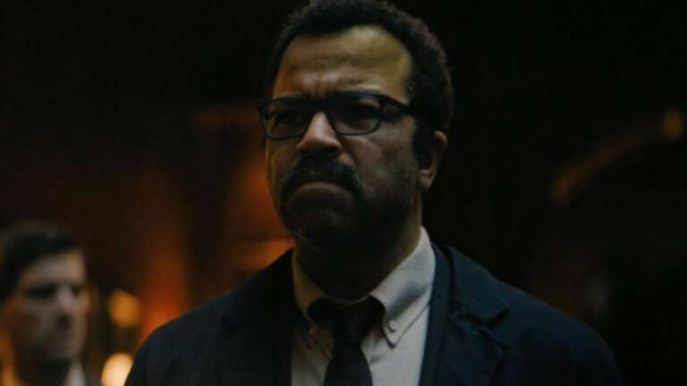

Batman já teve várias encarnações nas telonas desde que Adam West estrelou um longa-metragem
que serviu de ponte da primeira para a segunda temporada da mítica série dos anos 60.

Gordon
10 minutos atrás
Não é que Gotham já tenha sido uma cidade modelo, mas seu nível de corrupção vai muito além em 'The Batman'.
É como um mundo à parte, dando a sensação de que não há nada além.
Mulher Gato
10 minutos atrás
Quando lançou seu fantástico 'Coringa' em 2019, Todd Phillips fez muito mais do que retratar
pela enésima vez um dos vilões mais explorados e reinventados do extenso elenco da DC.
Comentarios
The Batman
20 minutos atrásGordon
10 minutos atrásMulher Gato
10 minutos atrás